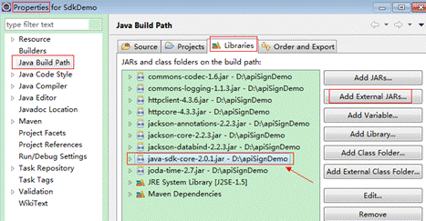
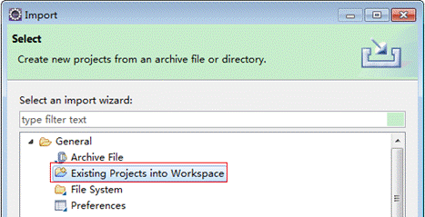
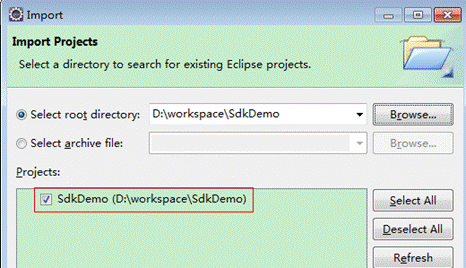
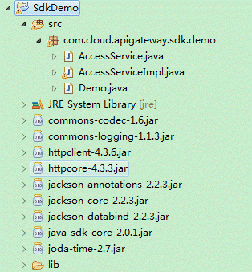

- Token-based authentication: Requests are authenticated using a token.
- AK/SK authentication: Requests are encrypted using the access key ID (AK) and secret access key (SK).
Token-based Authentication

The validity period of a token is 24 hours. When using a token for authentication, cache it to prevent frequently calling the IAM API used to obtain a user token.
A token specifies temporary permissions in a computer system. During API authentication using a token, the token is added to requests to get permissions for calling the API.
In Making an API Request, the process of calling the API used to obtain a user token is described.
{
"auth": {
"identity": {
"methods": [
"password"
],
"password": {
"user": {
"name": "user_name",
"password": "user_password",
"domain": {
"name": "domain_name"
}
}
}
},
"scope": {
"project": {
"name": "project_name"
}
}
}
}
After a token is obtained, the X-Auth-Token header field must be added to requests to specify the token when calling other APIs. For example, if the token is ABCDEFJ...., X-Auth-Token: ABCDEFJ.... can be added to a request as follows:
POST https://{endpoint}/v1/{project_id}/services
Content-Type: application/json
X-Auth-Token: ABCDEFJ....
AK/SK-based Authentication
An AK/SK is used to verify the identity of a request sender. In AK/SK-based authentication, a signature needs to be obtained and then added to requests.
AK: access key ID, which is a unique identifier used in conjunction with a secret access key to sign requests cryptographically.
SK: secret access key used in conjunction with an AK to sign requests cryptographically. It identifies a request sender and prevents the request from being modified.
The following uses a demo project to show how to sign a request and use an HTTP client to send an HTTPS request.
Download the demo project at https://github.com/api-gate-way/SdkDemo.
If you do not need the demo project, visit the following URL to download the API Gateway signing SDK:
Obtain the API Gateway signing SDK from the enterprise administrator.
Decompress the downloaded package and reference the obtained JAR files as dependencies, as highlighted in the following figure.

- Generate an AK/SK. (If an AK/SK file has already been obtained, skip this step and locate the downloaded AK/SK file. Generally, the file name will be credentials.csv.)
- Log in to ManageOne Operation Portal.
- In the upper right corner of the page, click your account avatar and choose My Settings from the drop-down list.
- On the My Settings page, the Project List tab page is displayed by default. Click the Manage Access Key tab page.
- Click Add Access Key to create an AK/SK pair.
- Click OK. The certificate is automatically downloaded.
- After the certificate is downloaded, obtain the AK and SK information from the credentials file.

- Only two access keys can be added for each user.
- To ensure access key security, access keys are automatically downloaded only when they are generated for the first time and cannot be obtained from the management console later. Keep them properly.
- Download and decompress the demo project.
- Import the demo project to Eclipse.Figure 1 Selecting Existing Projects into Workspace
Figure 2 Selecting the demo project
Figure 3 Structure of the demo project
 - Sign the request.
The request signing method is integrated in the JAR files imported in 3. The request needs to be signed before it is sent. The signature will then be added as part of the HTTP header to the request.
The demo code is classified into the following classes to demonstrate signing and sending the HTTP request:
- AccessService: abstract class that merges the GET, POST, PUT, and DELETE methods into the access method
- Demo: execution entry used to simulate the sending of GET, POST, PUT, and DELETE requests
- AccessServiceImpl: implementation of the access method, which contains the code required for communication with API Gateway
The following describes how to call a POST method to sign the request.
- (Optional) Add request header fields.
Uncomment the following code snippet in the AccessServiceImpl.java file, and specify the project ID and account ID.
//TODO: Add special headers. //request.addHeader("X-Project-Id", "xxxxx"); //request.addHeader("X-Domain-Id", "xxxxx"); - Edit the main() method in the Demo.java file, and replace the bold text with actual values.
As shown in the following code, if you use other methods such as POST, PUT, and DELETE, see the corresponding comment. Replace the values of region, serviceName, ak, sk, and url. The URL for obtaining the VPC is used in the sample project. Replace it with the actual URL. Contact the administrator to obtain the endpoint.
//TODO: Replace the value of region with the actual region where the service to be accessed is located. private static final String region = ""; //TODO: Replace vpc with the name of the service you want to access. For example, ecs, vpc, iam, and elb. private static final String serviceName = ""; public static void main(String[] args) throws UnsupportedEncodingException { //TODO: Replace the values of ak and sk with the AK/SK obtained on the My Credentials page. String ak = "ZIRRKMTWP******1WKNKB"; String sk = "Us0mdMNHk******YrRCnW0ecfzl"; //TODO: To specify a project ID (multi-project scenarios), add the X-Project-Id header. //TODO: To access a global service, such as IAM, DNS, CDN, and TMS, add the X-Domain-Id header to specify an account ID. //TODO: To add a header, find "Add special headers" in the AccessServiceImple.java file. //TODO: Test the API. String url = "https://{Endpoint}/v1/{project_id}/vpcs"; get(ak, sk, url); //TODO: When creating a VPC, replace {project_id} in postUrl with the actual value. //String postUrl = "https://serviceEndpoint/v1/{project_id}/cloudservers"; //String postbody ="{\"vpc\": {\"name\": \"vpc\",\"cidr\": \"192.168.0.0/16\"}}"; //post(ak, sk, postUrl, postbody); //TODO: When querying a VPC, replace {project_id} in url with the actual value. //String url = "https://serviceEndpoint/v1/{project_id}/vpcs/{vpc_id}"; //get(ak, sk, url); //TODO: When updating a VPC, replace {project_id} and {vpc_id} in putUrl with the actual values. //String putUrl = "https://serviceEndpoint/v1/{project_id}/vpcs/{vpc_id}"; //String putbody ="{\"vpc\":{\"name\": \"vpc1\",\"cidr\": \"192.168.0.0/16\"}}"; //put(ak, sk, putUrl, putbody); //TODO: When deleting a VPC, replace {project_id} and {vpc_id} in deleteUrl with the actual values. //String deleteUrl = "https://serviceEndpoint/v1/{project_id}/vpcs/{vpc_id}"; //delete(ak, sk, deleteUrl); } - Compile the code and call the API.
In the Package Explorer area on the left, right-click Demo.java and choose Run AS > Java Application from the shortcut menu to run the demo code.
You can view the API call logs on the console.